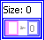

Map Constant
Owning Palette: Map VIs and Functions
Requires: Base Development System
Represents a map on the block diagram.
You cannot modify the embedded data in a map interactively or programmatically. You can update map data only as a whole through operations such as writing to the map front panel terminal or right-clicking the map and selecting Data Operations»Copy Data or Data Operations»Paste Data.

 Add to the block diagram Add to the block diagram |
 Find on the palette Find on the palette |
Example
Refer to the Map Collection - Word Counting VI in the labview\examples\Collections directory for an example of using the Map Constant.
 Open example Find related examples
Open example Find related examples